VPZ Research Center
| homeFantasyz (Catz)
All my breedz are proudly made from the original PFM breedz! "From scratch." ;-) Sounds I use are either in game, compiled by me, or from Carolyn, whose brilliance is a great inspiration, and her patience is astounding.
Do not directly link to my files, and if you distribute them, please give me credit. Breedz are listed alphabetically.
.cat files need to go in Resource\Catz folder. The files are zipped, so you need an unzipping program such as WinZip to use them. You do not need any other breedz files or anything to use these. Sound files are available when possible. If sounds aren't available, they may be eventually, but the breed is currently silent (not cat/dog sounds).
Breedz won't show up in the AC? The most common problem is that the Bunny.cat breed file was changed or deleted. (If you also have Dogz, you need the Pig.dog file too.) If you don't have these breedz in your game, the last ones in the Adoption Center won't show up. (Breedz are listed alphabetically, so the "VPZ" breedz tend to be the ones that drop off.) You need to either reinstall your game or download the Bunny (and/or Pig) from http://www.dmwright.com/petz/
***If only one file is available, it is a "unibreed" file that will work in Petz 3, 4, and 5!
If you have trouble downloading, right-click the link and choose "Save Target As..." All the files should work. (Although I can't verify Petz 3 or 4 downloads, since I don't use those games.) Sometimes files are interrupted in download, and you get corrupted messages, especially for large files and especially if you use dial-up. TRY AGAIN LATER.
|
Achichat (FKC Accepted) 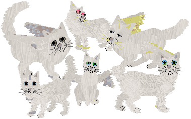 Believed to have evolved in parallel to the Achihond, the Achichat too has just recently been spotted wandering into regions away from their polar homeland. People called them "angel cats" and believed them to be celestial creatures, especially when they actually come in to contact with man and react with neither fear nor agression (due to their homelands so far from the influence of man). Long ago, they might have been solitary like most other small cat species, but these catz have developed unique hunting styles that reduce intraspecific competition. The cats that have taken flight opt to hunt small birds, much the way raptors do. Some developed coarse fur and are adept swimmers, catching fish and other aquatic prey. The remainder prey mostly upon small mammals. Little is known about the interactions between these and thei canine counterparts. One theory is that the species have never met, with the dogz living at the south pole and the catz' domain in the north. (This breed is entirely of my invention.) *** Download *** (Uses "Chinchilla Persian" sounds from Carolyn's Creations.) |
|
Cabbit (FKC Accepted) 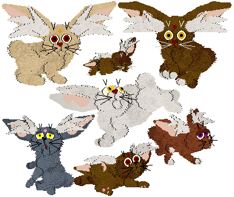 Cabbits are meowing, hopping, carrot-loving creatures who, in their lapine-feline form, are playful and harmless. At his owner's command, the cabbit can transform into a powerful starship. The most famous cabbit is Ryo-ohki, companion of the infamous space pirate Ryoko. (This breed was inspired by the series Tenchi Muyo.) *** Download *** (internal sounds) 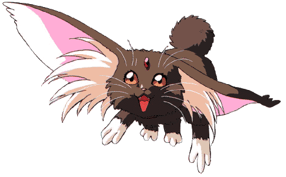 |
|
Car 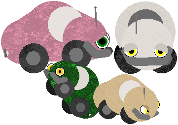 *** Download *** (Uses "Alley Cat" sounds from Carolyn's Creations.) |
|
Chocobo (FKC Accepted) 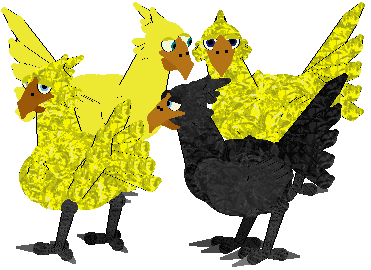 Ostrich-sized, flightless birds that serve as mounts for the people in the Final Fantasy worlds. Chocobos are used for everything from racing for entertainmant to battle mounts. Their functions mirror horses of our world. (Based on creatures from the Final Fantasy series, primarily FF7.) *** Download *** (silent) 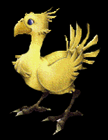 |
|
Equinex (FKC Accepted) 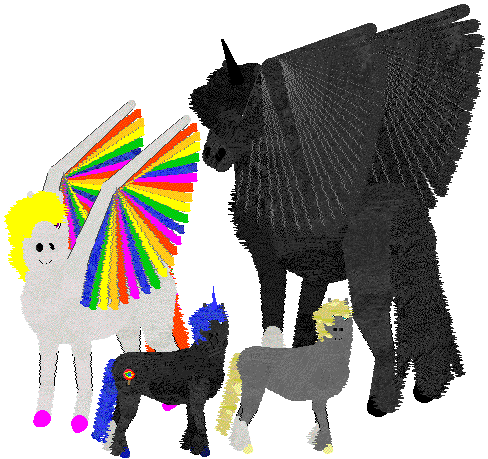 Tattoos are courtesy of Just Taboo and Cirrutopia. An equine breed of unknown origins. (This breed is purely my own invention.) *** Download *** Horse Sounds (These are the apaloosa sounds from Carolyn's Creations.) |
|
Faerie 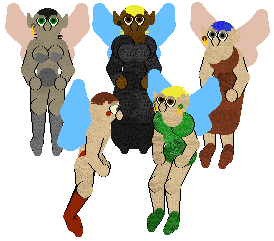 There are many kinds of fae in the world of fantasy. These faeries are really of a generic forest type. Fae in general are mischievous humanoid creatures, but most will not do any harm unless provoked. *** Download *** (Uses "Unicorn" sounds from Carolyn's Creations.) |
|
Felikron (FKC Accepted) 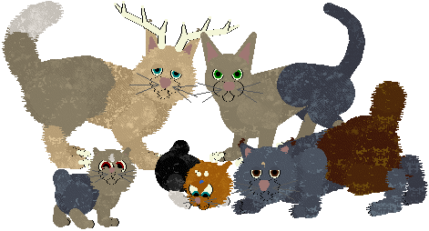 A large cat, possibly descended from bobcats, mountain lions, or other species. This large creature has a widespread habitat with the shorthaired variety roaming plains, deserts and armer climates, and the heavy-furred ones found in coniferous forests, tundra, and higher elevations. Many males possess antlers which are used to fight and defend themselves. (This breed is purely my own invention.) *** Download *** (internal sounds) |
|
Kirara (FKC Accepted) 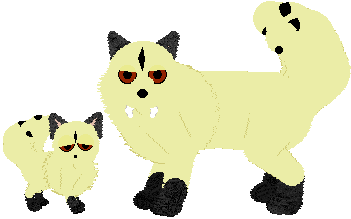 In a fantasy world of medieval Japan, occasionally a cat will develop an extra tail. These felines, sometimes called "two-tails," tend to possess magical abilities. The best known two-tail's name is Kirara (or Kilala depending on translation), companion of the demon-slayer Sango. Kirara has the ability to transform into a large, powerful, flying cat at whim and serves as mount and loyal fighting companion for Sango and her human, half-human, and "other" friends. (This breed was inspired by the series Inu Yasha.) *** Download *** (internal sounds) 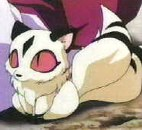 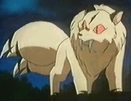 |
|
KittyBonez (FKC Accepted) 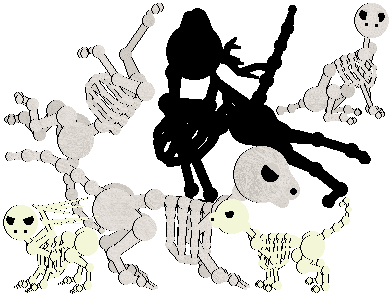 What skinless soulless beast is this, untimely roused from its eternal slumber? Perhaps these creatures met unpleasant fates in life. Perhaps they have returned for some holy or unholy purpose. Maybe they are merely the results of a bored hexer with an overactive imagination... Whatever they are, hopefully you can provide a nice home.
OOPS... *** Download *** Catz 5 (original "oops" = wrong offset) (Uses "Siamese" sounds from Carolyn's Creations.) |
|
Lepitaur (FKC Accepted) 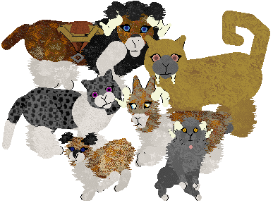 A domestic creature from the land of Venitell. It was selectively bred to serve many purposes. More info is available here: Lepitaur Page (This breed was my own invention.) *** Download ***Rodent Sounds Lemur Sounds Giraf Sounds (by Carolyn) |
|
Manen Lynx (FKC Accepted) 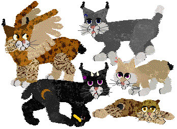 You can read the story of Manen Lynxes at this site. (This breed is purely my own invention.) Drop tail code is from Marinsa, but modified. Works in all games, thanks to Minibyte fixing the fur files! *** Download *** (Uses "Alley Cat" sounds from Carolyn's Creations.) |
|
Moggie 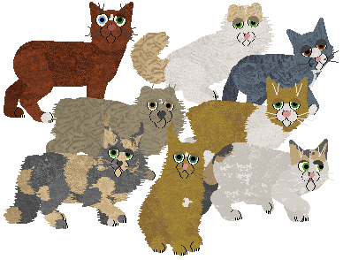 |